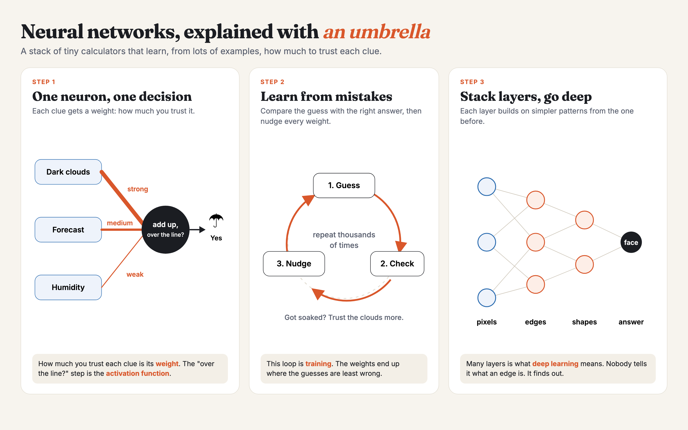

Neural networks, explained with an umbrella
Most explanations of neural networks start with math. This one starts with a decision everyone makes: should I take an umbrella today? I first wrote it as a class discussion post, then turned it into something you can play with.

Try one neuron
The left side is what today looks like. The right side is how much the neuron trusts each clue, which is called a weight. The neuron multiplies each clue by its weight, adds them up, and takes the umbrella if the total crosses the line. That last check is the activation function. Move the sliders.
Today's clues
Weights (trust)
Total vs. the line
Watch it learn
Here are eight past days and whether it actually rained. This neuron starts out trusting the forecast much more than the clouds. Press Next day: it guesses, checks the real answer, and nudges its weights after every mistake. That loop is training. Keep going until it gets all eight right.
Under each day: clouds, forecast and humidity, from 0 to 1.
Stack them and it gets deep
One neuron can only make one simple call. Put many of them side by side and you get a layer. Feed one layer's answers into the next and you get a network. In a photo, the first layer might learn to spot edges, the next combines edges into shapes like eyes and noses, and a later layer combines shapes into a whole face. Nobody tells it what an edge or an eye is. It finds those patterns because they help it get the answers right. Many layers is what "deep learning" means.
Where the umbrella analogy breaks
Every analogy leaves something out, so here's what this one gets wrong. In a real network nobody picks the weights. Training sets all of them, and a large network has millions. Real activation functions are also usually gradual curves instead of a hard yes-or-no switch, so the network can tell whether a small nudge made its guess a little better or a little worse. The demo above uses the hard switch because it's easier to see, and that's a choice I'd explain to anyone going further.
How I built it for beginners
The class version was text and one diagram. For the portfolio I added the two things text can't do: let readers set the weights themselves, and show training happen one mistake at a time.
- Chunking and progressive disclosure: one neuron first, then learning, then layers. No new term appears before the idea it names.
- Interactive learning: the sliders and the training loop give instant feedback, so a reader can test their own guess.
- One familiar story: every step reuses the umbrella, so readers never have to switch examples.
- Honesty about limits: a whole section says where the analogy breaks.
Artifact information
- Artifact title
- Neural Networks, Explained With an Umbrella
- Introduction
- Most explanations of neural networks start with math. This one starts with a decision everyone makes: should I take an umbrella today?
- Description
- An interactive page. Readers set the weights of one neuron with sliders, watch it learn from eight past days, and see how layers stack into a deep network. A section covers where the umbrella analogy breaks.
- Objective
- Teach how a neural network works to someone meeting AI for the first time, and be honest about what the analogy leaves out.
- Process
- It started as my 3.4 discussion post and a diagram. I rebuilt it as an interactive page, designed the eight example days so the neuron visibly learns to trust the clouds, and tested it on a phone-sized screen.
- Tools and tech used
- HTML, CSS, JavaScript and SVG. I used Claude (Anthropic) to draft the explanation, as I disclosed in the 3.4 discussion.
- Unique value
- The example data is designed. The neuron starts out trusting the forecast and reaches 8 out of 8 correct by round 3, with the trust shifting visibly to the clouds.
- Relevance
- Students and teammates introducing AI at work can use it to build the idea before they meet any terms.
- References
- Based on the AIML-500 Workshop 3 lessons on neural networks and on communicating for learning, including chunking and progressive disclosure.
What I took from it
- The hardest part was deciding what to leave out of the first version. Bias terms, gradients and the math behind training all wait until the reader has the basic idea.
- An analogy needs a section on where it breaks, or readers carry the wrong picture forward.
- The training data had to be designed too. The eight days are chosen so the neuron visibly learns to trust the clouds over the forecast.
- Next I'd test it with someone outside tech and watch where they get stuck, which is the feedback loop the lesson recommends.